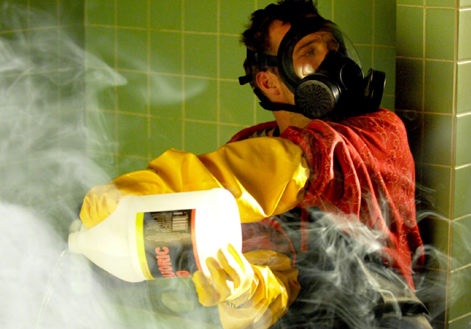
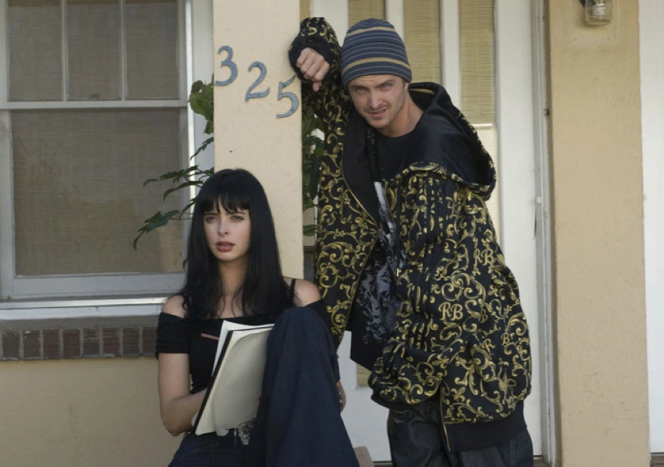
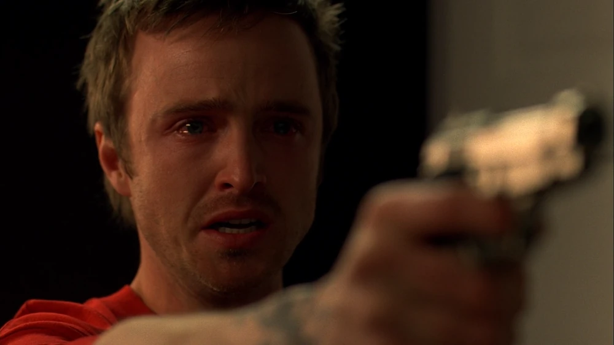
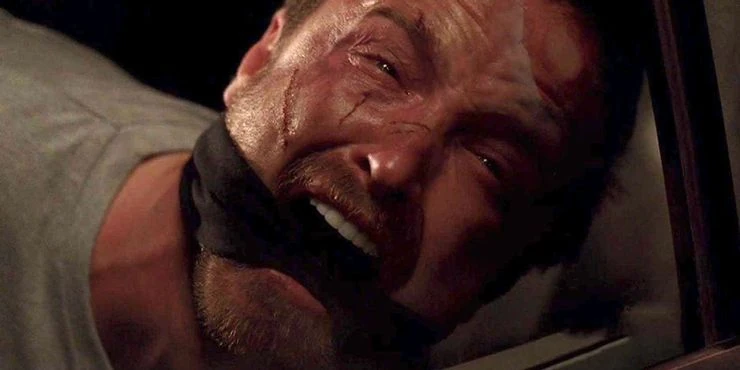
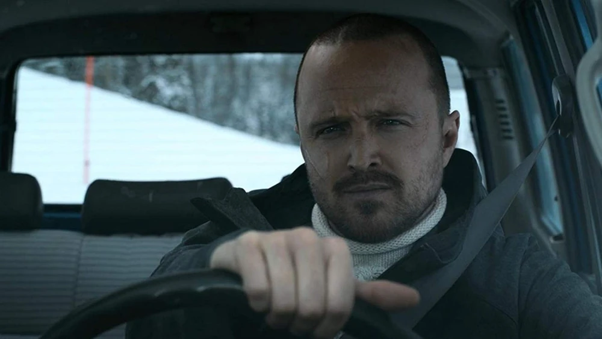

Jesse Pinkman
 Jesse Pinkman: Un Personaje Trágico en Breaking Bad
Jesse Pinkman: Un Personaje Trágico en Breaking Bad
Jesse Pinkman es uno de los personajes principales de *Breaking Bad*, interpretado por Aaron Paul. Su historia es trágica y compleja, ya que pasa de ser un joven problemático y sin dirección a un hombre profundamente afectado por los abusos emocionales y físicos que sufre a lo largo de la serie. Jesse se convierte en uno de los personajes más queridos y empáticos, siendo el "corazón" de la serie en contraste con la frialdad y el creciente desprecio por la moralidad de Walter White.
Inicios: El Chico ProblemáticoAl inicio de la serie, Jesse es un pequeño traficante de drogas y exalumno de Walter White. Se le presenta como un personaje despreocupado y algo inmaduro, que escapó de su hogar siendo adolescente y que ha tenido constantes problemas con la ley y con las drogas. Jesse se gana la vida fabricando y vendiendo metanfetaminas de baja calidad y no tiene ninguna aspiración clara en la vida. Su relación con su familia es tensa, especialmente porque sus padres lo rechazan debido a su estilo de vida y sus constantes problemas con la justicia. Este rechazo lleva a Jesse a buscar la validación y el sentido de pertenencia en los círculos de las drogas, donde encuentra amigos superficiales y un propósito temporal.
 Asociación con Walter WhiteLa vida de Jesse cambia drásticamente cuando Walter White, su exprofesor de química, lo contacta con una propuesta: usar sus conocimientos de química para fabricar una metanfetamina de alta pureza, con el fin de ganar dinero rápido. Aunque Jesse duda al principio, acepta, formando así una sociedad disfuncional pero lucrativa. Mientras Walter se convierte en el “cerebro” de la operación, Jesse es quien maneja las ventas y distribuye la droga en las calles, exponiéndose a peligros constantes. Al principio, Jesse ve la fabricación de metanfetaminas como una manera fácil de ganar dinero, pero pronto se da cuenta de los riesgos y el peso emocional de trabajar en el mundo del narcotráfico. A pesar de su inmadurez inicial, muestra una notable lealtad hacia Walter, quien poco a poco se convierte en una figura de influencia y manipulación en su vida. Jesse comienza a ganar dinero, pero su relación con Walter lo lleva a vivir experiencias traumáticas que marcan su vida para siempre.
 Tragedias Personales y PérdidaJesse enfrenta numerosas tragedias personales que lo afectan emocionalmente y moldean su carácter. Una de las pérdidas más significativas ocurre cuando se enamora de Jane Margolis, su vecina y compañera de lucha en su adicción. Jane se convierte en su pareja y en un apoyo emocional para Jesse, pero su relación tóxica los arrastra a ambos de vuelta a las drogas. Jane termina muriendo por una sobredosis frente a Jesse, mientras Walter observa sin intervenir. Esta tragedia destroza a Jesse y lo sume en una profunda depresión, sintiéndose culpable y responsable de su muerte. A partir de este punto, Jesse comienza a cuestionarse cada vez más sobre el impacto de su vida en los demás. Empieza a desarrollar un sentido de moralidad que lo hace destacar en contraste con Walter, quien se vuelve cada vez más manipulador y violento. Jesse no solo debe lidiar con la muerte de Jane, sino también con el constante abuso emocional de Walter, quien lo manipula para que siga involucrado en el negocio de las drogas, a pesar de las dudas y el arrepentimiento de Jesse.
 Enfrentamientos con Gus Fring y Mike EhrmantrautCon el crecimiento de su negocio, Jesse y Walter captan la atención de Gus Fring, un narcotraficante extremadamente peligroso y calculador. Jesse se convierte en una pieza clave en la rivalidad entre Walter y Gus, siendo manipulado por ambos. Durante este tiempo, Jesse desarrolla una relación especial con Mike Ehrmantraut, el “limpiador” y hombre de confianza de Gus. Mike actúa como una figura protectora y casi paternal para Jesse, enseñándole cómo moverse en el mundo del crimen de manera más cuidadosa y profesional. A diferencia de Walter, Mike ve a Jesse como alguien valioso y digno de respeto, lo que hace que Jesse comience a ver a Mike como un modelo a seguir y un protector. Sin embargo, la tensión entre Walter y Gus finalmente estalla en un conflicto mortal, donde Jesse se ve atrapado entre ambos bandos. Aunque Gus intenta separarlo de Walter y ofrecerle una salida segura, Jesse permanece leal a Walter, lo cual le lleva a involucrarse en un enfrentamiento mortal entre los dos criminales. Finalmente, Walter logra eliminar a Gus, pero Jesse se da cuenta de que ha sido manipulado una vez más por Walter, y su desconfianza hacia él comienza a aumentar.
 Manipulación y Última TraiciónLa relación entre Jesse y Walter continúa deteriorándose. A pesar de que Jesse intenta alejarse de la vida criminal en varias ocasiones, Walter siempre encuentra una manera de manipularlo para que regrese. En un momento crucial, Jesse descubre que Walter envenenó a Brock, el hijo de su nueva pareja, para manipularlo y lograr que se una a él en su plan para eliminar a Gus Fring. Esta revelación destroza a Jesse, quien se siente traicionado de una forma que jamás imaginó. El vínculo que alguna vez los unió se rompe por completo, y Jesse finalmente reconoce a Walter como el monstruo que realmente es. Este descubrimiento lleva a Jesse a un punto de ruptura. Sin embargo, antes de que pueda hacer justicia por su cuenta, es secuestrado por una banda de neonazis que trabaja con Walter. Los neonazis lo obligan a fabricar metanfetaminas para ellos, manteniéndolo prisionero y sometido a condiciones inhumanas. En este punto, Jesse ha perdido toda esperanza y vive en un estado de desesperación, trabajando como un esclavo en el mismo negocio que una vez lo tentó como una vía de escape.
Rescate y RedenciónEn los episodios finales de la serie, Walter, ahora consciente de su propio declive moral, regresa para enfrentar a los neonazis y liberar a Jesse. En un acto final de redención, Walter permite que Jesse escape y le da la oportunidad de liberarse definitivamente de su influencia. Jesse, profundamente marcado por el trauma, encuentra la fuerza para huir y dejar atrás la vida de crimen y sufrimiento que ha llevado. El final de la serie deja a Jesse en un momento de libertad, escapando en un coche hacia un destino incierto, pero con una segunda oportunidad para rehacer su vida lejos de la influencia de Walter. Esta historia se continúa en *El Camino*, una película derivada de *Breaking Bad*, donde Jesse busca cerrar capítulos pendientes y construir una vida alejada de la violencia y la manipulación.
 El Legado de Jesse PinkmanJesse Pinkman es un personaje trágico cuya vida está moldeada tanto por sus propias decisiones como por la influencia de Walter. A diferencia de Walter, quien se transforma en un villano total, Jesse conserva un sentido de moralidad y humanidad que lo convierte en un personaje empático. Su historia es la de un hombre que cae una y otra vez, pero que finalmente encuentra una salida, aunque el precio emocional es enorme. Su viaje a lo largo de *Breaking Bad* representa el daño profundo que el crimen puede causar en una persona que, a pesar de sus errores, aún mantiene una chispa de redención. Jesse Pinkman queda como uno de los personajes más complejos de *Breaking Bad*, un sobreviviente que, aunque marcado y herido, logra finalmente liberarse y tener una nueva oportunidad de vida.